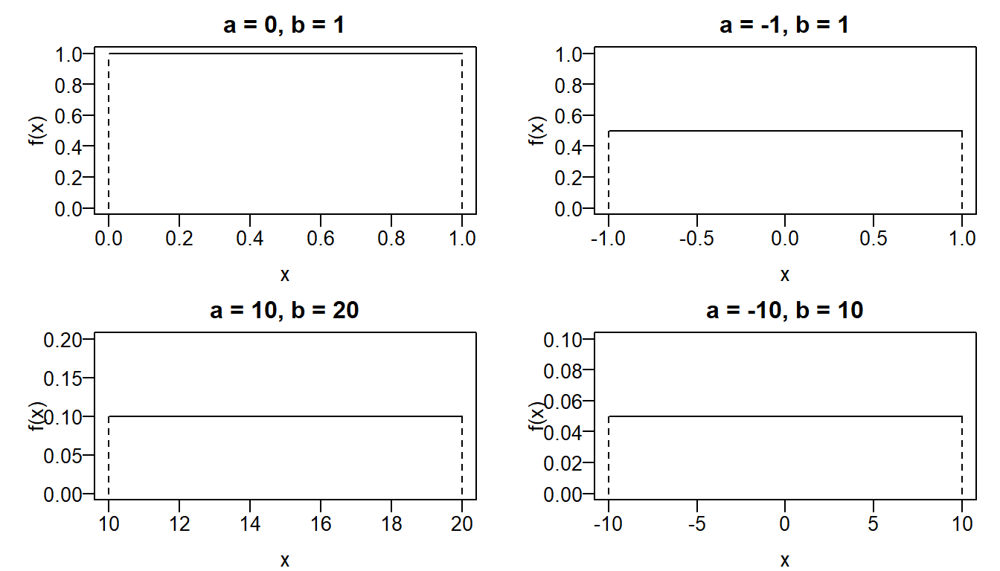
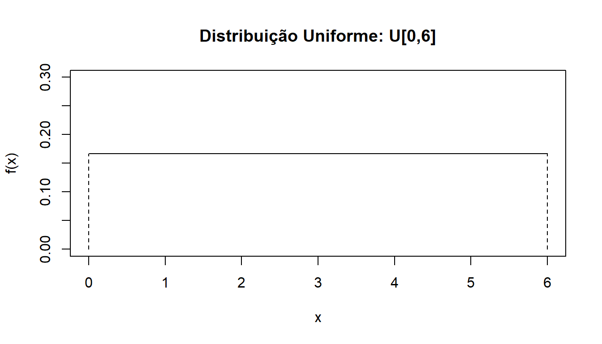

Distribuição Uniforme
Introdução
Uma variável aleatória contínua que segue um modelo probabilístico cuja a probabilidade de gerar qualquer outro ponto num intervalo não-enumerável contido no espaço amostral seja proporcional ao tamanho do intervao, é conhecido como modelo uniforme ou distribuição uniforme. Sua importância dentro da teoria da probabilidade, sob o ponto de vista teórico, está no fato da distribuição uniforme gerar qualquer outro modelo probabilístico via processo de simulação no intervalo \([0,1]\), admitindo-se que a função de distribuição acumulada é invertível.
Distribuição Uniforme
Definição
Uma variável aleatória \(X\) tem distribuição uniforme (contínua) no intervalo \([a,b]\), \(a < b\), se sua função densidade de probabilidade (fdp) é dada por
\[ f(x) = \begin{cases} \frac{1}{b-a} & \quad \text{se } a \leq x \leq b \\\\ 0 & \quad \text{caso contrário} \end{cases} \] Esperança e Variância: \(\mbox{E}(X) = \frac{a+b}{2} \quad \mbox{e} \quad \mbox{Var}(X) = \frac{(b-a)^2}{12}\)
Notação: \(X \sim \text{U}\,[a,b]\).
par(mfrow=c(2,2), mar=c(3,4,2,1), mgp=c(2,0.5,0), las=1)
plot(0:1, dunif(x = 0:1, min = 0, max = 1), type = "l",
xlab = "x", ylab = "f(x)", main = "a = 0, b = 1",
ylim = c(0,1), axes = TRUE)
segments(0, 0, 0, 1, lty = 2)
segments(1, 0, 1, 1, lty = 2)
plot(-1:1, dunif(x = -1:1, min = -1, max = 1), type = "l",
xlab = "x", ylab = "f(x)", main = "a = -1, b = 1",
ylim = c(0,1), axes = TRUE)
segments(-1, 0, -1, .5, lty = 2)
segments(1, 0, 1, .5, lty = 2)
plot(10:20, dunif(x = 10:20, min = 10, max = 20), type = "l",
xlab = "x", ylab = "f(x)", main = "a = 10, b = 20",
ylim = c(0,.2), axes = TRUE)
segments(10, 0, 10, .1, lty = 2)
segments(20, 0, 20, .1, lty = 2)
plot(-10:10, dunif(x = -10:10, min = -10, max = 10), type = "l",
xlab = "x", ylab = "f(x)", main = "a = -10, b = 10",
ylim = c(0,.1), axes = TRUE)
segments(-10, 0, -10, .05, lty = 2)
segments(10, 0, 10, .05, lty = 2)
Exemplo
Com o objetivo de verificar a resistência à pressão de água, os técnicos de qualidade de uma empresa inspecionam os tubos de PVC produzidos. Os tudos inspecionados têm 6 metros de comprimento e são submetidos a grandes pressões até o aparecimento do primeiro vazamento, cuja distância a uma das extremidades (fixada à priori) é anotada para fins de análise. Seleciona-se um tubo ao acaso para ser inspecionado. Queremos calcular a probabilidade de que o vazamento esteja, a no máximo 1 metro das extremidades. Vamos denotar por \(X\) a variável aleatória que indica a distância correspondente ao vazamento de maneira uniforme. Determine:
Qual é a distribuição de probabilidade de \(X\)? Esboce o gráfico.
Qual a probabilidade de que o vazamento esteja, no máximo, a um metro da extremidade de referência?
Qual a probabilidade de que o vazamento esteja, no máximo, a um metro de qualquer uma das extremidades?
Solução
- Como \(X =\) “Distância correspondente ao vazamento”, então, temos que \(X \sim \text{U}\,[0,6]\) e portanto, sua função densidade é dada por
\[ f(x) = \begin{eqnarray*} \frac{1}{6} & \quad \text{se } 0 \leq x \leq 6 \\\\ 0 & \quad \text{caso contrário} \end{eqnarray*} \]
O gráfico da função densidade por \(X\) é representado por
plot(0:6, dunif(x = 0:6, min = 0, max = 6), type = "l",
xlab = "x", ylab = "f(x)", main = "Distribuição Uniforme: U[0,6]",
ylim = c(0,0.3), axes = TRUE)
segments(0, 0, 0, 1/6, lty = 2)
segments(6, 0, 6, 1/6, lty = 2)
\[ P(X \leq 1) \ = \ P(0 \leq X \leq 1) \ = \ \int_{0}^{1} f(x) \ dx \ = \ \int_{0}^{1} \frac{1}{6} \ dx \ = \ \frac{1}{6} \]
\[ \text{Prob} = P(0 \leq X \leq 1) + P(5 \leq X \leq 6)\ = \ \int_{0}^{1} f(x) \ dx + \int_{5}^{6} f(x) \ dx \ = \ \frac{1}{6} + \frac{2}{6} \ = \ \frac{1}{3} \]
Exercícios
- Admite-se que uma pane pode ocorrer de maneira uniforme em qualquer ponto de uma rede elétrica de 10 km. A partir dessas informações, determine:
Qual é a probabilidade de a pane ocorrer nos primeiros 500 metros? E de ocorrer nos 3 km centrais da rede?
O custo de reparo da rede depende da distância do centro de serviço ao local da pane. Considere que o centro de serviço está na origem da rede e que o custo é de R$ 200 para distâncias até 3 km, de R$ 400 entre 3 e 8 km e de R$ 1000 para as distâncias acima de 8 km. Qual é o custo médio do conserto?
- O tempo necessário para um medicamento contra dor fazer efeito foi modelado de acordo com uma distribuição uniforme no intervalo de 5 a 15 minutos tendo por base experimentos conduzidos em animais. Um paciente, que esteja sofrendo dor, recebe o remédio e, supondo válido o modelo mencionado, qual a probabilidadeda dor:
Cessar em até 10 minutos?
Demorar pelo menos 12 minutos até cessar?
- Suponha que o valor esperado de uma variável aleatória que segue distribuição uniforme seja 1 e sua variância é igual a 1/12. Encontre a probabilidade da variável assumir valores menores que 3/4.

Este conteúdo está disponível por meio da Licença Creative Commons 4.0